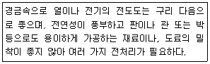

금속도장기능사 (2010-10-03 기출문제)
1과목: 색채
1. 다음 중 에폭시수지 도료의 특징이라고 할 수 없는 것은?
- 내열성이 좋다.
- 방식성이 우수하다.
- 소지에 대한 부착이 양호하다.
- 상온 건조형은 경화제가 필요 없다.
(정답률: 알수없음)

2. 다음 중 에멀션 도료의 용제로 사용하는 것은?
- 지방족 탄화수소계
- 방향족 탄화수소계
- 물
- 케톤류계
(정답률: 80%)
3. 다음 중 체질안료가 아닌 것은?
- 클레이
- 규조토
- 티탄백
- 황산바륨
(정답률: 알수없음)
4. 다음 중 일반적으로 보수도장시 중도 연마작업에 사용되는 샌드페이퍼로 가장 적당한 것은?
- #40
- #80
- #180
- #400
(정답률: 알수없음)
5. 다음 중 방청안료에 속하지 않는 것은?
- 광명단
- 아연말
- 아산화동
- 아산화연
(정답률: 알수없음)
6. 산세법에 사용되는 산 중 다른 산에 비하여 값이 싸고, 철의 바탕 일부를 녹여서 수소 가스를 발생하며, 녹을 철 표면으로부터 제거시키며 5~11% 정도의 농도로 사용하는 산은?
- 황산
- 인산
- 염산
- 질산
(정답률: 알수없음)
7. 도료용 합성수지 중 열경화성수지가 아닌 것은?
- 아크릴수지
- 에폭시수지
- 요소수지
- 폐놀수지
(정답률: 73%)
8. 우레탄퍼티의 일반적인 특성에 대한 설명 중 틀린 것은?
- 내수성, 경도가 좋다.
- 1액형과 2액형이 있다.
- 내약품성이 나쁘다.
- 부착성, 내충격성이 좋다.
(정답률: 알수없음)
9. 다음 중 도료가 구비해야 할 조건으로 틀린 것은?
- 속건성 또는 저온 경화성이라야 한다.
- 평활하고 광택있는 고막을 형성해야 한다.
- 도막은 내후성 화학적 저항성이 작아야 한다.
- 도막은 단단하고 한편 유연하면 부착성이 좋아야 한다.
(정답률: 알수없음)
10. 탈지 용제의 사용 조건으로 틀린 것은?
- 인화성이 작을 것
- 화학적으로 안전할 것
- 인체에 무해하고 가격이 저렴할 것
- 휘발성으로 금속표면에 남아 있을 것
(정답률: 100%)
11. 다음을 설명하는 파도장물의 재료로 옳은 것은?

- 주석
- 아연
- 구리
- 알루미늄
(정답률: 75%)
12. 클리어 래커에 대한 설명 중 틀린 것은?
- 연마성, 살갖임이 좋다.
- 불휘발분이 적고 도막은 연하다.
- 산가가 낮은 클리어 래커는 금속의 변색 방지에 적합하다.
- 단독으로 외부에 사용하면 내후성이 좋지 않기 때문에 애커 에나멜에 혼합하여 사용한다.
(정답률: 50%)
13. 다음 금속재료 중 철금속이 아닌 것은?
- 주석
- 연철
- 강철
- 희선철
(정답률: 알수없음)
14. 마스킹 테이프 중 수지 부품의 차열용으로 적당한 것은?
- 플라스틱 테이프
- 메탈 테이프
- 철 테이프
- 종이 테이프
(정답률: 80%)
15. 프라이머에 대한 특징 중 옳지 않은 것은?
- 금속소지에 직접 도장된다.
- 서페이서에 대한 부착성이 좋다.
- 수분의 투과성이 좋다.
- 온도변화에 순응성이 좋다.
(정답률: 알수없음)
16. 다음 중 중도용 도료에 관한 설명으로 틀린 것은?
- 하도와 상도의 부착을 좋게 한다.
- 보통 마무리 칠색과 다른 색을 사용한다.
- 상도를 아름답게 하기 위하여 도장한다.
- 퍼티의 흡입을 방지할 목적으로 사용한다.
(정답률: 알수없음)
17. 알칼리 탈지제가 구비하여야 할 조건이 아닌 것은?
- 부식성이 없을 것
- 표면장력이 낮을 것
- 알칼리 함유량이 없을 것
- pH 8.3 이상의 용액이 될 수 있을 것
(정답률: 알수없음)
18. 다음 중 마스킹 테이프의 선택 기준 설명으로 틀린 것은?
- 내열성이 없을 것
- 내(耐)용제성이 강할 것
- 떼어내기 쉽고, 접착제가 남지 않을 것
- 접착력이 안정하고, 접착성이 양호할 것
(정답률: 100%)
19. 다음 중 보호구의 보관방법에 대한 설명으로 틀린 것은?
- 광선이 잘 들고 통풍이 잘되는 장소에 보관할 것
- 발열성 물질을 보관하는 장소 주변에 가까이 두지 않을 것
- 모래, 진흙 등이 묻은 경우는 깨끗이 씻고 그능에 건조할 것
- 부식성, 유해성, 인화성 액체, 기름, 산 등과 혼합하여 보관하지 않을 것
(정답률: 알수없음)
20. 에어리스 스프레이 도장 장치의 피스톤 펌프에 관한 설명 중 틀린 것은?
- 압축 공기에 의해 왕복 운동을 한다.
- 펌프의 배율이 일반적으로 1:20~1:40 이다.
- 에어 모터와 피스톤 본체로 이루어진다.
- 도료에 저압력을 가하게 한다.
(정답률: 67%)
2과목: 금속도장재료
21. 금속도장 작업시 온도의 한계를 32℃로 정하고 있다. 작업장 온도가 32℃ 이상일 때 제일 먼저 발생되는 도막의 결함은?
- 흐름 현상
- 광택 손실
- 불완전 경화
- 핀홀 현상
(정답률: 알수없음)
22. 주로 유류 등에 사용되는 액상 또는 기체상의 연료성 화재는?
- A급 화재
- B급 화재
- C급 화재
- D급 화재
(정답률: 77%)
23. 다음 중 도장의 기능에 대한 내용으로 틀린 것은?
- 배 및 등에 수중 생물의 부착 및 생육을 억제한다.
- 열, 음파, 전기 등의 전도성을 변화시키지 못한다.
- 피도장물의 표면의 마찰 계수를 변화시킨다.
- 피도장물의 표면을 보호하여 녹과 부식 등을 억제한다.
(정답률: 알수없음)
24. 금속도장에서 표면처리 목적과 가장 관계가 없는 것은?
- 부착
- 외관
- 내구성
- 기능성
(정답률: 알수없음)
25. 적외선 건조로의 장점에 해당되지 않는 것은?
- 위생적이다.
- 취급이 용이하다.
- 열효율이 좋고 건조가 빠르다.
- 물체의 형상에 영향을 주지 않는다.
(정답률: 알수없음)
26. 에어 컴프레셔(air compressor) 취급 시 꼭 지켜야 할 사항은?
- 매일 1회 이상 V밸트를 새 것으로 교환한다.
- 매일 1회 이상 압력계를 분해 소제한다.
- 매일 1회 이상 에어탱크를 온수로 세척 및 부족한 온수를 보충한다.
- 공기탱크의 배기밸브를 열어 1일 1회 이상 드레인을 배출한다.
(정답률: 알수없음)
27. 정전 고장 보스 내에 착용하는 신발은?
- 고무창
- 가죽전화
- 합성수지창
- 통전화
(정답률: 알수없음)
28. 에어리스 스프레이 도장작업에 관한 설명 중 틀린 것은?
- 적은 동력으로 대량 분사가 가능하다.
- 더스트의 날림이 적고 도료의 손실 및 도장실의 오염이 적다.
- 건의 내부에서 압축 공기를 이용하여 도료를 미립화하는 방법으로 도장한다.
- 도료에 직접 압력을 가해 아주 작은 노즐로 미립화하는 방법으로 도장한다.
(정답률: 알수없음)
29. 도막의 표면이 가루가 되어 광택을 잃고 손으로 가볍게 문지르면 가루가 묻어나는 현상은?
- 가스 체킹
- 얼룩
- 백악화
- 블리딩
(정답률: 92%)
30. 퍼티(putty)의 목적으로 가장 옳은 것은?
- 소지조정에 있다.
- 색상을 선명하게 하기 위함이다.
- 접착력을 좋게 하기 위함이다.
- 메탈릭 도장의 효과를 높이기 위함이다.
(정답률: 알수없음)
31. 에어 탱크의 공기 압력이 규정 이상 되면 컴프레서를 공회전 시켜 모터나 컴프레서의 과부하를 방지하여 연속가동케 하는 장치는?
- 에어밸브
- 흡기구
- 언로더
- 벨트
(정답률: 알수없음)
32. 금속도장의 화성처리 목적으로 틀린 것은?
- 금속 표면의 부식 증가
- 도장의 내구력을 증가
- 도료의 부착성 향상
- 도장의 미관 손상을 방지
(정답률: 알수없음)
33. 유기용제의 종류별 특정색 표시가 옳은 것은?
- 제1종:파랑
- 제2종:노랑
- 제3종:빨강
- 제4종:보라
(정답률: 알수없음)
34. 붓의 관리에 대한 설명 중 틀린 것은?
- 방충제가 든 상자에 넣어 보관한다.
- 붓은 사용 후 비눗물에 삶아 깨끗이 씻어낸다.
- 유성도료를 사용한 붓은 미네럴 스피릿으로 씻는다.
- 셀락 니스를 사용한 붓은 알코올로 씻어낸다.
(정답률: 알수없음)
35. 백악화(chalking) 결함의 설명 중 틀린 것은?
- 자외선에 약한 안료를 사용할 때 발생한다.
- 동절기보다 자외선이 강한 하절기에 많이 발생한다.
- 전색제에 비해 안료가 많은 경우에 발생한다.
- 금속에 직접 수성 도료를 도장하였을 때 발생한다.
(정답률: 67%)
36. 도장 중독의 예방과 관계 깊은 기기 및 설비는?
- 진공청소기
- 부스
- 샌더 수연(水硏)
- 방폭등
(정답률: 알수없음)
37. 수세식 부스의 수류판에 물을 순환시키는 이유는?
- 물을 절약하기 위하여
- 냄새를 제거하기 위하여
- 혼합된 도료에 먼지를 막기 위하여
- 비산된 도료를 수조에 떨어뜨리기 위하여
(정답률: 알수없음)
38. 작업 종료 후 에어스프레이건을 정비하여고 한다. 꼭 해체하여야 할 부분은?
- 공기 캡
- 도료 조정 장치
- 공기 조정 장치
- 패턴 조정 장치
(정답률: 알수없음)
39. 도막의 내구성 시험기가 아닌 것은?
- 촉진내후성 시험기
- 염수분무 시험기
- 가드너 시험기
- 낙사마모 시험기
(정답률: 알수없음)
40. 상도 도장작업 전에 점검해야 될 사항이 아닌 것은?
- 피도면이 거칠지 않고 평활한지 확인한다.
- 경도와 밀착성이 우수한지 확인한다.
- 왁스나 유분이 남아 있는지 확인한다.
- 연마 가루나 지문이 남아 있지 않은지 확인한다.
(정답률: 80%)
3과목: 금속도장
41. 방청 효과가 크고 고도의 방청 처리가 필요한 철구조물, 선박, 차량 등에 사용되며, 아연말을 주체로 한 프라이머는?
- 오일 프라이머
- 광명단 프라이머
- 합성수지 프라이머
- 징크리치 프라이머
(정답률: 알수없음)
42. 다음의 도료 시험법 중 회전식 점도계는?
- 오스왈드 점도계(Ostwald viscometer)
- 레드우스 점도계(Red wood viscometer)
- 스토머 점도계(Stormer viscometer)
- 포드컵 점도계(Ford cop viscometer)
(정답률: 알수없음)
43. 녹을 제거시키는 제정방법 중 기계적 방법이 아닌 것은?
- 스케링 해머법
- 프레임 크리너법
- 분사법
- 산세법
(정답률: 80%)
44. 다음 중 도료 순환장치의 분류 중 순환 형식의 분류에 해당하지 않는 것은?
- 서브라인형
- 모노플로형
- 브랜치라인형
- 폴리플로형
(정답률: 알수없음)
45. 다음 중 탈청과 등시에 철강면에 얇은 층을 만들어 수세후에도 철강면에 산화물이나 수산화물을 만들지 않는 것은?
- 황산
- 염산
- 인산
- 질산
(정답률: 65%)
46. 상도 도장 후 도막에 먼지나 티 등의 이물질이 부착되어 있을 경우 제거하는데 가장 좋은 연마지는?
- #100~#300
- #320~#400
- #400~#600
- #800~#1200
(정답률: 알수없음)
47. 다음 중 주걱의 재료로 가장 부적당한 것은?
- 대나무
- 플라스틱
- 고무
- 비닐
(정답률: 100%)
48. 포리셔의 취급 방법에 대한 설명 중 틀린 것은?
- 회전운동으로 연마한다.
- 평면 연마에 알맞다.
- 적당한 압력으로 연마한다.
- 모서리 등에 많이 사용한다.
(정답률: 100%)
49. 다음 중 원색의 명도차가 가장 큰 것은?
- 남색-노랑
- 빨강-연두
- 파랑-자주
- 보라-주황
(정답률: 90%)
50. 먼셀 표색계(Munsell)에서 완전한 순백색의 명도는?
- 0
- 5
- 10
- 14
(정답률: 90%)
51. 명도 9의 노랑과 명도 4의 파랑을 반반씩 붙인 회전판을 돌려서 나타나는 색의 명도는?
- 명도 4보다 낮게 된다.
- 명도 9보다 높게 된다.
- 명도 9와 같게 된다.
- 명도 9와 4의 중간 명도가 된다.
(정답률: 알수없음)
52. 다음 중 가장 후퇴, 수축의 성격을 띤 색은?
- 다홍, 연두, 자주
- 노랑, 주황, 연두
- 빨강, 보라, 자주
- 청록, 파랑, 검정
(정답률: 100%)
53. 안전, 피난, 진행 등에 사용하는 안전색은?
- 빨강
- 주황
- 파랑
- 녹색
(정답률: 82%)
54. 색채와 심리에서 빨간색을 설명한 것으로 틀린 것은?
- 자극성과 활성이 강하고 흥분이 된다.
- 불안을 초래하고, 신경을 긴장시킨다.
- 이 색을 장시간동안 보고 있으면 생리작용의 혼란이 온다.
- 식욕을 증진시키는 효과가 있어서 식당에서 많이 사용된다.
(정답률: 91%)
55. 다음 중 색의 유사조화에 대한 설명으로 옳은 것은?
- 색상의 차이를 크게 배색하였을 때에 얻어지는 조화를 말한다.
- 색상환에서 거리가 가장 먼 보색끼리 배색하여 얻어지는 조화를 말한다.
- 명도가 비슷한 인접 색상을 동시에 배색하였을 때 얻어지는 색의 조화를 말한다.
- 같은 색상에서 명도의 차이를 극단적으로 벌어지게 배색할 때에 얻어지는 조화를 말한다.
(정답률: 알수없음)
56. 색 감각에 의해 나타나는 잔상과 가장 관계가 깊은 색상은?
- 원래감각의 인근 유사 색상
- 원래감각과 보색관계에 있는 색상
- 원래감각에서 약간 둔화 된 밝기나 색상
- 원래감각에서 강화된 질의 밝기나 색상
(정답률: 55%)
57. 다음 중 색광혼색의 3원색으로 옳은 것은?
- R, G, B
- R, G, Y
- M, Y, C
- M, W, C
(정답률: 알수없음)
58. 해링의 반대색설과 관계없는 것은?
- 흰색-검정
- 노랑-파랑
- 빨강-초록
- 연두-보라
(정답률: 알수없음)
59. 먼셀 표색계의 표기 5R 4/14에서 14에 해당하는 것은?
- 색상
- 채도
- 색명
- 명도
(정답률: 알수없음)
60. 다음 중 가장 따뜻한 느낌을 주는 색은?
- 연두, 보라, 자주
- 빨강, 자주, 파랑
- 노랑, 초록, 남색
- 주황, 노랑, 다홍
(정답률: 알수없음)